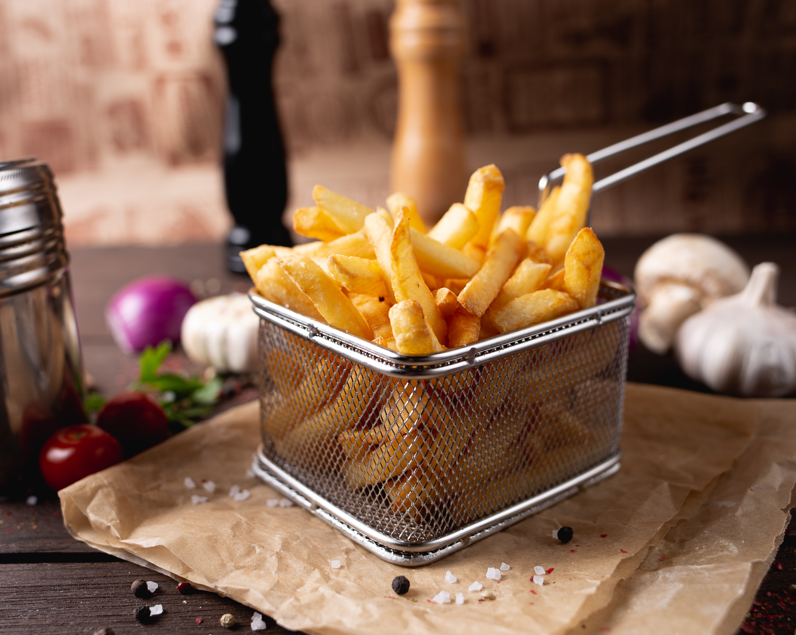
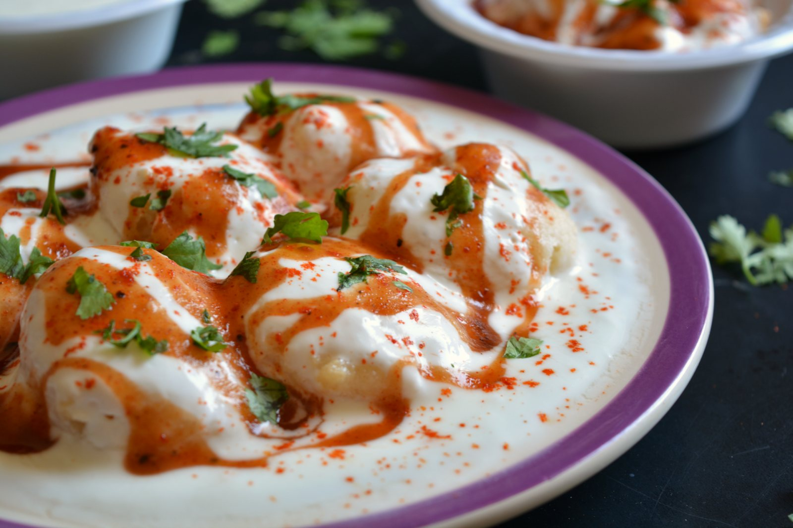
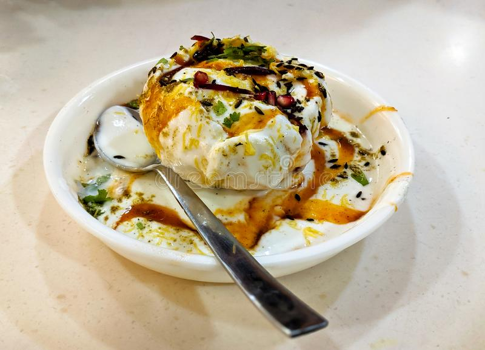
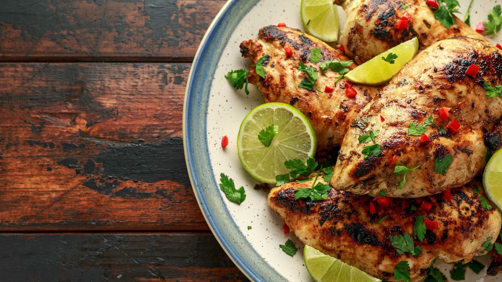
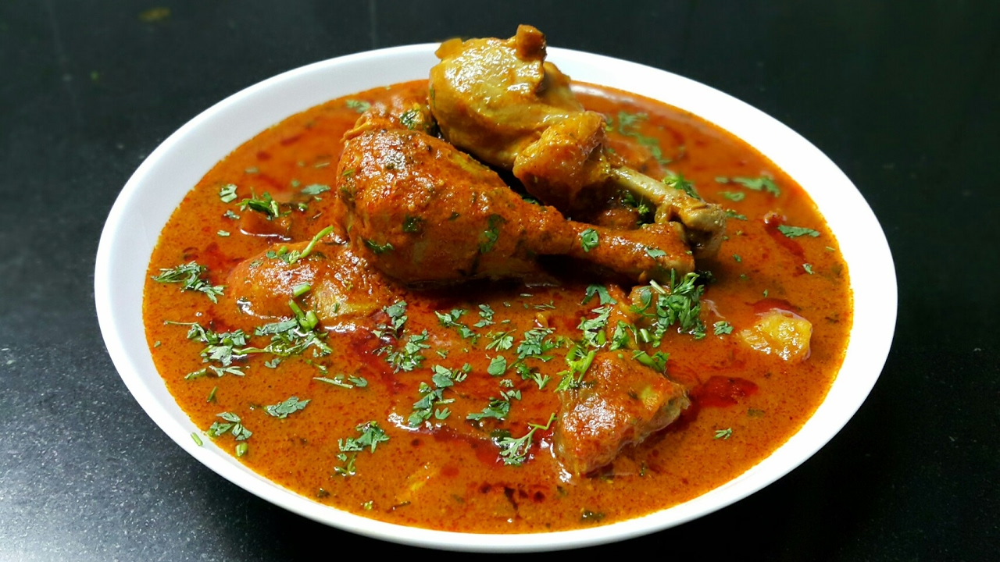
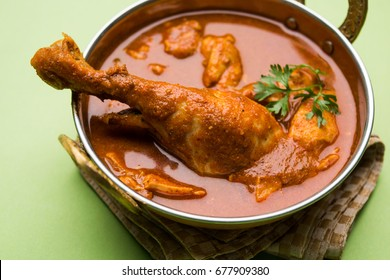

Recipe
Potato
Frenchfries

Ingredients of French Fries
Potato 500 gm, 2 cup refined oil, Salt as required,
How to make Frenchfries
Step 1 Chop the potatoes To prepare this easy recipe, you need to make sure that they are cut in the right shape and size. They should neither be too thick, nor too thin and should be cut clean and sharp. The trick is to first slice the potatoes and then cut them lengthwise. You can also use a fries cutter for that long, even shape.
Step 2 Soak cut potatoes in ice-cold water for 10-15 minutes Now, wash the potatoes under running water till they are squeaky clean. Place them in a bowl of iced water for 10 to 15 minutes. Keep them submerged in water or they will turn black.
Step 3 Deep fry the potato fries Now, heat the oil in a deep bottomed pan. Once the smoke starts appearing, reduce the flame and allow it to acquire a lower temperature. Now, deep fry the potatoes in batches. Keep the flame low. This will make them crunchy and also help retain their colour.
Step 4 Sprinkle salt and pepper and serve hot Drain excess oil and place them on an absorbent paper. Allow them to cool. Now sprinkle salt and pepper and toss well. Serve immediately with ketchup. They can also be served with burgers and cutlets.
Tips To make those perfect French Fries, add your cut potatoes in ice-cold water for a good 20-30 minutes. For making crispy fries, dry the soaked potatoes twice to thrice in tissue paper and then fry. When making French Fries for a large gathering, half-fry them and keep aside. When you are about to serve, quickly fry them for a second time and you will have perfect French Frie...
Potato Ring

Ingredients of Potato Ring
1 cup semolina 2 medium potato 1 teaspoon ginger paste 2 teaspoon corn flour salt As required 1/4 cup refined oil 1/2 cup yoghurt (curd) 1 teaspoon garlic paste 1 teaspoon chilli flakes 1/2 teaspoon chaat masala powder 2 tablespoon coriander leaves
How to make Potato Ring
Step 1 Whisk sooji and curd Add sooji and curd in a bowl. Whisk the two ingredients properly.
Step 2 Add spices Now add chaat masala, chilli flakes, salt, garlic paste and ginger paste. Mix well.
Step 3 Prepare a dough Lastly, add grated-boiled potatoes, corn flour and coriander leaves. Mix well to prepare a dough.
Step 4 Roll out and cut rings Now flatten the dough with the help of a rolling pin and cut rings from it. Repeat the process to use all the leftover dough.
Step 5 Deep fry Heat oil in a pan, add potato rings and shallow fry them until golden brown.
Step 6 Serve hot Serve hot with a dip of your choice. Do try this recipe, rate it and let us know how it turned out to be
Cheesy Potato Bites

Ingredients of Cheesy Potato Bites
2 large potato 4 tablespoon all purpose flour 1 teaspoon oregano 1/2 teaspoon chaat masala 1/2 teaspoon black pepper 8 cheese cubes 1 teaspoon garlic paste 1 teaspoon chilli flakes salt as required 1 cup vegetable oil
How to make Cheesy Potato Bites
Step 1 Boil and grate potatoes Boil the potatoes and peel them. Grate the potatoes and add them to a bowl.
Step 2 Prepare the dough Add maida, garlic paste, salt, black pepper, chaat masala, oregano, chilli flakes and grated cheese cubes. Mix well to prepare a dough.
Step 3 Make small balls Now take out small chunks from the dough and make small balls with them.
Step 4 Fry and serve Heat oil in a kadhai and deep fry the prepared balls. Once crispy, your Cheesy Potato Balls are ready to be served.
Rice
Veg Fried Rice Recipe

Ingredients of Veg Fried Rice Recipe
2 cup boiled rice 1 tablespoon soy sauce 1 tablespoon chopped garlic 1/4 cup carrot 1/4 cup cabbage 1/4 cup green onion black pepper as required 2 tablespoon sunflower oil 1 tablespoon vinegar 1/4 cup onion 1/4 cup red bell pepper 1/4 cup green beans salt as required
How to make Veg Fried Rice Recipe
Step 1 Prepare the rice To prepare this recipe, firstly boil the rice and keep it aside. You can also use leftover rice from lunch in order to prepare a delicious dinner.
Step 2 Prepare the veggies Chop all the veggies and keep them together on a plate.
Step 3 Fry the veggies Add 2 tbsp oil to a pan. Add chopped garlic and saute for a minute. Now add all the veggies together and fry for a few minutes (3-4 minutes).
Step 4 Adjust the seasoning Now add soy sauce and vinegar. Keep on high heat and mix well. Lastly, add salt, pepper as per taste and cook for the last one minute.
Step 5 Ready to be served Once cooked, garnish with chopped green onions. Your vegetable fried rice is ready to be served with chilli paneer or manchurian.
Bibimbap

Ingredients of Bibimbap
1 sliced & slit cucumber english 1 bunch spinach 1 1/2 teaspoon virgin olive oil 1 tablespoon garlic 4 egg salt as required 3 tablespoon pepper sauce 1 tablespoon soy sauce 2 sliced & slit carrot 1/4 teaspoon chilli flakes 3 1/2 cup readymade rice
How to make Bibimbap
Step 1 Wash the veggies To begin with this easy recipe, wash and cut the veggies into small strips. Next, cook soaked white rice with some water or you can also use leftover white rice for this. in the meantime, take a bowl and mix the cucumber strips with Korean Hot pepper sauce (optional) and keep it aside.
Step 2 Heat a wok Take a wok over medium flame and add some water, once the water is warm add the washed spinach leaves. Then stir nicely and allow it cook for for 3 minutes, drain the water, transfer the spinach to a bowl and mix it with some soy sauce.
Step 3 Cook the carrots Next to the same wok, add olive oil and once the oil is hot, add in the garlic paste and carrots, toss and cook for 2-3 minutes. Then add in pepper sauce mixed cucumber strips, salt, chilli flakes and give it all a nice mix. Transfer all this to a different bowl.
Step 4 Top it with eggs and serve hot! Next, cook the eggs separately in the pan. Then take the serving plates and equally divide the veggies mixture, rice, spinach mixture and top it with some hot pepper sauce (optional). Lastly, place the sunny side up, serve hot and enjoy!
Tips If you don't want too much of spices in your dish, you can skip adding pepper sauce. If you are fond of meat, you can cook the meat with some oil, soy sauce and pepper sauce and add it to the dish. To accentuate the flavours you can also add some ginger. Traditionaly made with Korean Hot Pepper sauce, in this recipe we have used simple hot sauce.
Gulkand Kheer

Ingredients of Gulkand Kheer
4 tablespoon gulkand 1 litre full cream milk 4 leaves paan leaves 1 1/2 tablespoon pistachios 1 teaspoon spice cardamom 1 cup rice 1/2 cup condensed milk 1 1/2 tablespoon almonds 1 cup cold milk
How to make Gulkand Kheer
Step 1 Cook rice with full cream and condensed milk To prepare this sweet delight, first bring full cream milk to boil. Once the milk boils, add in it the condensed milk. Mix well and stir in cooked rice. Cook for about half an hour stirring continuously.
Step 2 Prepare a gulkand mixture Next, add in the chopped almonds and pistachios. Mix well to combine in the milk mixture. Let the mixture cook for another 5 minutes. Meanwhile, in a separate bowl add cold milk, gulkand and chopped pan leaves. Mix well to obtain gulkand mixture.
Step 3 Cook the kheer with gulkand and enjoy it chilled Take the kheer mixture off heat. Add in the gulkand mixture, cardamom powder and stir to mix well. Refrigerate for 2-3 hour and serve at room temperature.
Street Recipe
Sweet Potato Chaat Recipe
Ingredients of Sweet Potato Chaat
300 gm chopped,boiled,peeled sweet potato 1 teaspoon chaat masala powder black salt as required salt as required pomegranate seeds as required 1 teaspoon roasted cumin powder 3/4 teaspoon powdered sugar 3 tablespoon tamrind chutney 1 handful chopped coriander leaves 1 tablespoon lemon juice
How to make Sweet Potato Chaat
Step 1 Add sweet potatoes in a bowl To make this dish, boil and peel the sweet potatoes. Next, take a bowl, add sweet potatoes and cumin powder, salt, chaat masala, black salt, and sugar. Mix everything well.
Step 2 Pour in tamarind chutney Once the potatoes are mixed well with powdered spices, add in tamarind chutney. Mix to combine well.
Step 3 Garnish with pomegranate seeds Now, pour the prepared chaat into a serving bowl and top it with pomegranate seeds.
Step 4 Your Sweet Potato Chaat is ready to serve. Season it with lemon juice and freshly chopped coriander leaves. Give a nice stir and it's done. Your Sweet Potato Chaat is ready. Enjoy.
Bread Dahi Vada

Ingredients of Bread Dahi Vada
4 slices bread 1 tablespoon yellow moong dal salt as required 2 cup refined oil 2 teaspoon sugar black salt as required 2 cup water 1/4 tablespoon tamrind chutney 1 tablespoon pomegranate seeds 1 tablespoon chaat masala powder 1/4 cup urad dal 1 teaspoon asafoetida 1/4 teaspoon baking soda 1 1/2 cup yoghurt (curd) 1 tablespoon coriander seeds 1/2 inch ginger 2 dashes cumin powder 2 dashes red chilli powder 1 dash garam masala powder
How to make Bread Dahi Vada
Step 1 Prepare the dal batter Take yellow moong and urad dal together in a bowl and wash them well. Soak them together for about 8-10 hours or overnight. Next day, when the dals are soaked, drain the water and keep aside. Now, in a blender jar, add the soaked dals, green chillies, ginger, asafoetida, salt, baking soda, and a little water. Grind them to a fine paste and transfer to a bowl. Using a whisker, whisk well this paste until the paste is light and fluffy. Once done, keep aside until required.
Step 2 Prepare the filling Now, take a bowl and mix chopped almonds, cashews, raisins, and desiccated coconut.
Step 3 Make stuffed vadas Next, take a bread slice and cut the corners of each slice. Using a little water, keep the ends of the whole bread wet. Add a little filling in the centre and close the ends to make a round ball. Press the ball a little to give it a Tikki like shape. Using the same process, prepare more such vadas.
Step 4 Fry the Bread Vadas Put a wok or kadhai over medium flame and heat oil in it. When the oil is hot enough, dip a vada in the dal batter. Now, grease your hands and take out the dipped vada and place it in the hot oil. Dip more such vadas in the batter and fry all the vadas. Once done, place them on tissue papers that will soak the extra oil.
Step 5 Soak the vadas in the curd mixture This step will help you in soaking the fried vadas. Take a large bowl and add ½ cup curd, sugar, salt, water and asafoetida. Whisk well all the ingredients and make sure you use hung curd for this soaking. When this mixture is ready, put the vadas in it and soak them for 5-7 minutes. Make sure you don’t soak these vadas for too long, as this can make your vadas soggy.
Step 6 Make your Dahi Vada Chaat While your vadas are soaking, take a bowl and whisk the curd well with black salt, salt and sugar. Once done, take out the soaked vadas and gently press them a little. Place these vadas on a plate, and pour the curd over them. Over this, sprinkle the spices and pour tamarind chutney over them. Finally, garnish your chaat with coriander leave, pomegranate seeds, garam masala, chaat masala powder and some boondi. Serve the chaat chilled.
Raj Kachori

Ingredients of Raj Kachori
1 1/2 tablespoon whole wheat flour 2 tablespoon ghee 2 tablespoon onion 1 cup refined oil 1 tablespoon gram flour (besan) 1/2 cup semolina 1 green chilli For Filling black salt as required 1 pinch asafoetida 1 teaspoon ginger paste chaat masala powder as required 1/2 cup boiled potato 1 tablespoon ground coriander seeds 2 pinches red chilli powder 1 teaspoon green chilli 1/2 cup boiled kala chana 1/2 cup soaked moong dal For Garnishing 50 gm boiled sprouted moong 1/2 cup hung curd 4 tablespoon green chutney 1 teaspoon chaat masala powder 1 cup sev 1/2 tablespoon cumin powder 1/4 cup sweet tamarind sauce salt as required 2 tablespoon coriander leaves 6 papdi
How to make Raj Kachori
Step 1 Knead the dough and soak moong dal for 2 hours Take a large bowl and mix together whole wheat flour, semolina, gram flour and ghee. Using a little water, knead the mixture to a thick, pliable dough. Once done, cover the dough with a damp cloth and keep it aside for preparing the kachori. Afterwards, soak moong dal in a bowl for 2 hours in a large bowl. Once done, drain the extra water and keep it aside.
Step 2 Stir fry the dal and when cooled, grind into coarse mixture Next, put a frying pan over medium flame and heat a little ghee in it. Once the ghee is melted, add the soaked moong dal in it and stir fry for a minute. Once fried a bit, turn off the flame and transfer the fried dal to a grinder jar. When the dal is cool enough to handle, grind to form a coarse mixture. Then, add all the filling ingredients into the grinding jar and grind them roughly.
Step 3 Make a small paratha and deep fry, then make a medium hole in between Now, take out a small portion of the prepared dough and using a rolling pin, roll it into a small puri. Just like stuffed paratha, fill it with a tablespoon of the filling and fold well. Then, using a little dry flour, roll the puri again. Meanwhile, put a kadhai on high flame and heat refined oil in it. Once the oil is hot enough, add this puri in it and deep fry until the puri is crisp and golden. Once fried, put it on a napkin to soak the extra oil. Once done, make a hole in the centre.
Step 4 Add all the filling ingredients and garnish with sev Now, take a mixing bowl and add boiled potatoes in it along with chana and boiled moong sprouts. Mix them with yoghurt, green chutney, sweet tamarind chutney, chaat masala powder, chopped coriander leaves, onion, salt and green chillies. Then, fill the kachori with this mixture and garnish with hung curd, green chutney, sweet tamarind chutney, chaat masala powder, salt, coriander leaves, crushed papdis and cumin powder. Make the final garnishing of sev.
Step 5 Serve Your delish Raj Kachori is ready to be served. Do try this recipe, rate it and let us know how it turned out to be.
Chicken Recipe
Beer and Lime Chicken

Ingredients of Beer and Lime Chicken
400 gm chicken 3 tablespoon lime juice 2 teaspoon honey 1 teaspoon black pepper 1 tablespoon spice paprika 1 1/2 cup beer 7 cloves minced garlic salt as required 3 tablespoon cilantro
How to make Beer and Lime Chicken
Step 1 Wash and clean the chicken Wash and clean the chicken, cut them into desired pieces and pat dry. Next, take a bowl and add beer, lime juice, honey, garlic, salt, paprika, pepper and cilantro. Mix all the ingredients and let the honey dissolve completely.
Step 2 Marinate the chicken In the next step add the chicken pieces to the bowl and and marinate for about half an hour.
Step 3 Grill the chicken pieces Preheat the grill, and place the chicken pieces after removing the excess marinate. You can keep the marinade for basting the chicken and grill by flipping sides. Place the chicken pieces on the grill and let them cook for 5-7 minutes each side or until the chicken is tender and juices run clear.
Step 4 Serve hot Serve hot with lemon, green chili sauce/green chutney.
Chicken Akbari

Ingredients of Chicken Akbari
500 gm chicken 2 green chillies 1 tablespoon ginger paste 1/2 cup yoghurt (curd) 1 teaspoon red chilli powder 1/2 teaspoon cinnamon 2 clove 50 gm cashews 2 tablespoon mustard oil 1 handful coriander leaves 1/2 cup onion 1 tablespoon garlic paste 1/2 cup tomato 1 1/2 teaspoon garam masala powder 1 teaspoon turmeric 2 green cardamom 50 gm coconut 2 teaspoon coriander powder 2 tablespoon ghee salt as required
How to make Chicken Akbari
Step 1 Prepare the masala To begin, wash your chicken thoroughly with fresh water and pat it dry. Now take a pan and add ghee or oil to it. Add in your whole spices like cinnamon, green cardamom and cloves and let these roast for 40 seconds in the oil. Add the green chillies, sliced onions, saute them until they turn translucent. Then add the ginger-garlic paste and finely chopped tomatoes. Add salt to cook the tomatoes quickly.
Step 2 Add the chicken and cook At this point, add in the chicken and let it cook until it changes colour. Add all the spices, stir well and let it cook evenly on all sides. Now add the curd and close the lid.
Step 3 Add cashew-coconut paste, cook and serve! Meanwhile, grind the cashews with coconut flesh and make a fine paste by adding a little bit of water as required in the grinder. Once you see the oil starts separating from the chicken, add this paste and ½ cup of water with chopped coriander leaves. Cover and cook for the next 5 minutes. Serve with hot rotis!
Masala Chicken

Ingredients of Masala Chicken
750 gm chicken 2 cup chopped onion salt as required 2 inches cinnamon stick 2 green cardamom 1 teaspoon ginger paste 2 teaspoon coriander powder 1 cup water 2 teaspoon cumin powder 1 tablespoon garam masala powder 1 tablespoon ghee 4 tablespoon mustard oil 1/2 cup minced tomato 3 teaspoon coriander leaves 2 bay leaf 1 black cardamom 2 teaspoon garlic paste 1 teaspoon powdered turmeric 2 teaspoon red chilli powder 2 green chillies 2 teaspoon kasoori methi powder
How to make Masala Chickenr
Step 1 Wash and clean the chicken To make Masala Chicken, first thoroughly wash the chicken under running water. Now put it in some warm salted water and allow it to rest for 10 minutes and throw the water away and wash again. This helps to remove the smell of the chicken.
Step 2 Saute whole spices Add oil and ghee in pan and heat over medium flame. When the oil is hot enough, add bay leaves and both the cardamom and cinnamon. Saute for a minute and then add finely chopped onion into it. Cook till onions turn pink. Then add the ginger-garlic paste. Fry for a minute and then add chicken pieces in it. Cook chicken for 2-3 minutes until it turns white.
Step 3 Add spices in frying chicken Quickly, add red chilli powder, coriander powder, turmeric, cumin powder, and salt to taste. Stir to mix all the ingredients well with the chicken. Cook for a minute and then add finely chopped tomatoes and green chillies (slit and halved). Now reduce the flame and cook covered for 6-7 minutes and then uncovered till the chicken is browned.
Step 4 Cook for 2-4 minutes with closed lid and serve hot Add one cup water and cover the pan with a lid and cook for 2-4 minutes until the chicken is tender and soft. Remove the lid and garnish with garam masala powder, coriander leaves, kasoori methi powder and cook on high flame till the oil separates. Your Masala Chicken or Chicken Masala is ready. Enjoy with butter naan, rice or roti.